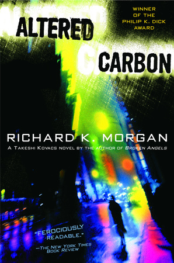
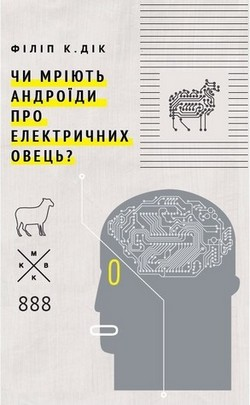

Золотий вік літератрури
Гіперіон
«Гіперіо́н» (англ. Hyperion) — науково-фантастичний роман американського письменника Дена Сіммонса 1989 року. Перша книга тетралогії «Пісні Гіперіона». Роман поєднує в собі 6 оповідей, кожна з яких є історією одного з головних героїв.
Світ роману
Внаслідок наукових експериментів на Старій Землі відбулася Велика Помилка — глобальна катастрофа, що впродовж років знищила планету. Незадовго до того, як чорна діра, що вийшла з-під контролю, припинила існування Землі, почалася так звана Гіджра — переселення людей на інші планети Всесвіту. Це стало можливим завдяки видатному винаходу — двигуну Гокінга (названого на честь відомого сучасного фізика Стівена Гокінга), що дозволяє рухатися зі швидкістю більше швидкості світла. Двигун був винайдений людьми, а ШтІни (штучні інтелекти), подарували людству такі свої винаходи як портали Перекидача і надсвітловий зв'язок.Дізнатися більше..
Видозмінений вуглець
«Видозмінений вуглець», також «Зінакшений вуглець» (англ. Altered Carbon) — фантастичний роман-антиутопія британського письменникаРічарда Моргана , де в майбутньому міжзоряні подорожі здійснюються переміщенням свідомості між тілами. Роман видано у 2002 році. Як жанр визначається технотрилер і посткіберпанк. Продовженням є романи «Зламані янголи» (2003 рік) та «Пробуджені фурії» (2005 рік).
Зміст
Події відбуваються у XXVII столітті. Вчені навчилися людські особистості оцифровувати і завантажувати в нові тіла-клони, що звуться «оболонками». Більшість людей мають мозкові імпланти — стеки, в яких зберігається їхня свідомість. У разі смерті тіла стек може зберігатися вічно. Католики вирішують не міняти оболонки, оскільки вірять, що після смерті душа вирушає в рай і не може перейти в нову оболонку. Це робить католиків метою для вбивств, оскільки вбивці знають, що жертва не буде відроджена для надання свідчень. Одна з сюжетних ліній роману — резолюція 653 ООН, що дозволяє змінити це юридичне становище і дозволити владі тимчасово помістити вбиту католичку в нову оболонку для участі в справі про вбивство.Дізнатися більше...
Чи мріють андроїди про електричних овець?
«Чи мріють андроїди про електричних овець?» (англ. Do Androids Dream of Electric Sheep?) — науково-фантастичний романФіліпа Діка , написаний 1968. Розповідає історію «мисливця за головами» Ріка Декарда, який переслідує андроїдів — істот, що майже не відрізняються від людини, оголошених поза законом на Землі. Дія відбувається в отруєному радіацією і частково покинутому Сан-Франциско майбутнього.
Короткий зміст
Дія роману відбувається 1992 року (у пізніших виданнях — 2021), через кілька років після того, як Остаточна світова війна спустошила значну частину Землі. Після війни ООН стала активно пропагувати еміграцію у позаземні колонії, щоб захистити людство від згубних ефектів радіоактивного пилу. Як додатковий стимул кожному емігранту надавався безкоштовний андроїдний працівник-слуга (принизливо званий анді) будь-якої марки, на вибір. Люди, що залишилися на Землі, живуть в напівпокинутих містах, де радіаційне зараження спричиняє важкі захворювання і генетичні відхилення. Всі тварини або вимерли, або перебувають під загрозою вимирання. Тому володіння і догляд за твариною вважається чеснотою, практично обов'язком кожного, а вид домашньої тварини визначає соціальний статус власника. Торгівля тваринами йде за цінами, вказаними в каталозі Сідні, для вимерлих видів вказується ціна останньої проданої особини. Багато людей, які не можуть дозволити собі домашнього вихованця, купують штучну тварину-робота. У головного героя, Ріка Декарда, була вівця, яка померла від правця і була ним замінена на електричну вівцю, щоб створити видимість володіння твариною. Дізнатися більше...